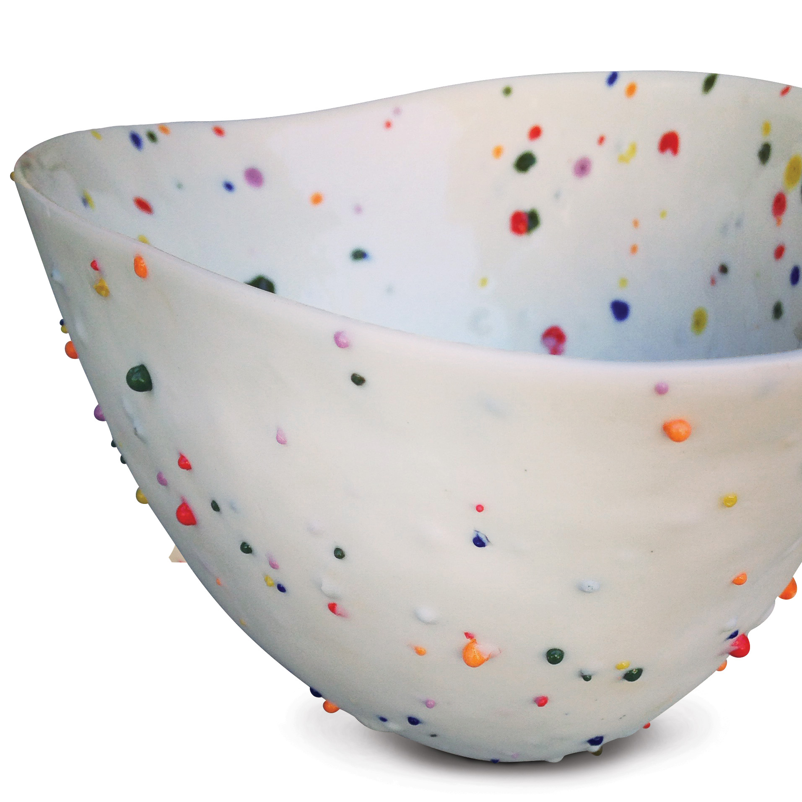

Recipe
Colored Shigaraki
A Shigaraki-style body additive made from sintered feldspar chips and stain, meant to be wedged into clay for eruptive, feldspathic bursts at cone 6.
Process
Application: Sinter the feldspar mix, crush to chip size, sieve out dust, then wedge chips into clay at roughly 1:8 chips-to-clay by weight.
Notes: Add 37.5% water before sintering to cone 05 in a bisque-fired crucible dusted lightly with alumina hydrate. Elliott Kayser reports good results with several Mason stains, chrome oxide, and cobalt carbonate.
Fit: Sieve out dust before wedging chips into clay or the body can look muddy and contaminated.
Context
Surface tags: body additive, shigaraki, chips, feldspar pop
Clay bodies: sculptural clay body with added chips
Sources: can-colored-shigaraki

Ingredients
| Material | % | Role |
|---|---|---|
| Ferro Frit FB-284-M | 25.0 | flux |
| Custer Feldspar | 75.0 | feldspathic burst source |
| Mason Stain | 6.0 | colorant |
Cone-6-Final-Fire
Kiln: electric
Atmosphere: oxidation
Schedule: Final work fired to cone 6 after chips are sintered separately to cone 05.
Cooling: Not captured.
Hold: 0
Notes
This is not a glaze in the narrow sense, but it matters for the project because wood-fired-looking work often depends on body events as much as surface coating.
- The additive should be tracked alongside glazes because it changes how an electric-fired piece reads at first glance.
- This is a strong bridge between faux atmospheric glazing and clay-body engineering.